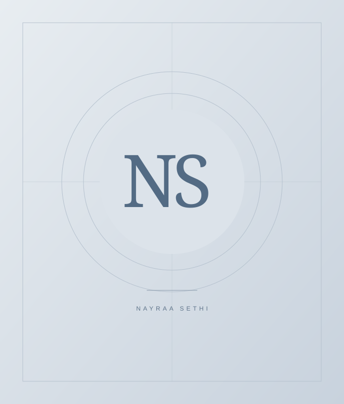

PRO BONO CONSULTING
Stronger nonprofit governance
Board governance analysis and peer benchmarking for the Down Syndrome Association of Pittsburgh.
POLICY & PUBLIC AFFAIRS
Policy Advocacy · Program Coordination
Stakeholder Engagement
Public and international affairs graduate student connecting policy research, strategic communication, and stakeholder perspectives to advance informed decisions.
University of Pittsburgh · MPIA Candidate, 2026

PROFILE PHOTOGRAPH TO BE ADDEDBringing research,
people, and policy
together.
01 / ABOUT
I work at the intersection of policy, people, and institutions.
I’m pursuing a Master of Public & International Affairs at the University of Pittsburgh. My experience spans government relations, policy research, governance consulting, student advocacy, and strategic communications.
From representing graduate students to reviewing nonprofit governance frameworks, I bring a research-driven approach and clear, audience-specific communication to complex issues. I’m especially interested in how institutions can listen to their communities and turn evidence into practical action.
Connect on LinkedIn02 / SELECTED PROJECTS
Selected academic and pro bono work in governance, policy research, and program development.
PRO BONO CONSULTING
Board governance analysis and peer benchmarking for the Down Syndrome Association of Pittsburgh.
ACADEMIC STRATEGY & GRANT PROPOSAL
A proposed five-year workforce development program designed to serve 100 low-income youth.
RESEARCH & POLICY DIALOGUE
Transatlantic research and cross-institutional dialogue on democratic resilience and technology governance.
GRADUATE POLICY PORTFOLIO
Policy memos and legal analyses across civil rights, AI legislation, data privacy, and international security.
03 / EXPERIENCE
Experience across university governance, research, community engagement, and communications.
New Student Programs · University of Pittsburgh
Matthew B. Ridgway Center for International Security Studies
Graduate & Professional Student Government · University of Pittsburgh
Office of Residence Life · University of Pittsburgh
Down Syndrome Association of Pittsburgh · SPIA
Benchmarked five or more peer organizations, identified governance gaps, and recommended bylaw amendments and board development reforms.
Graduate & Professional Student Government · University of Pittsburgh
Chaired the Bylaws Committee and secured formal amendments. Coordinated representation across 20+ university committees and 11+ schools.
School of Public & International Affairs · University of Pittsburgh
Evaluated 300+ applications and developed campaigns contributing to a 10% application increase and 27% engagement increase.
ASEAN Youth Organization · India Chapter
Led design and communications, translating complex policy and program information into accessible materials for youth and international audiences.
Illuminate · Maharaja Agrasen Institute of Management Studies
Led communications across Facebook, Instagram, LinkedIn, and X, growing audiences through tailored messaging over ten months.
04 / EDUCATION
EXPECTED DECEMBER 2026
University of Pittsburgh
School of Public and International Affairs
Maharaja Agrasen Institute of Management Studies
New Delhi, India
Indian Institute of Governance and Leadership
05 / SKILLS
Research, interpretation, and communication that support sound policy decisions.
Qualitative and quantitative approaches to understanding complex questions.
Coordination and clear storytelling across teams, platforms, and audiences.
06 / RÉSUMÉ
Explore my experience, education, and skills in one place.
LET’S CONNECT